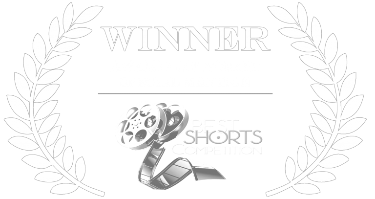
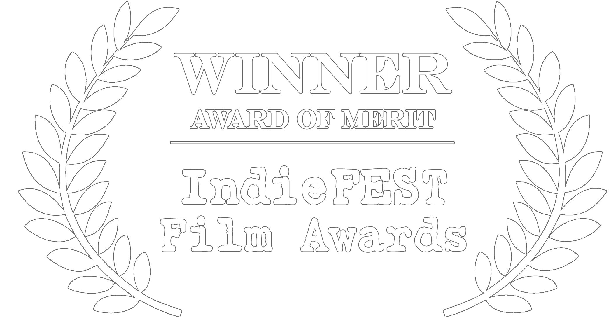

Film Recognition & Awards
The documentary chronicle of the McKenzie River Drift Boat has received numerous accolades and official selections at film festivals across the nation.
Oregon Documentary Film Festival (Winter 2025)
Winner — Best Documentary Feature
Nature Without Borders International Film Festival
Best of Show — Biography

Environmental Film & Screenplay Festival
Best Short Film
East Village New York Film Festival
Winner — Best First Time Director

Best Shorts Competition
Winner — Award of Merit (Special Mention)
Oregon Coast Film Festival 2025
Closing Film

The IndieFEST Film Awards
Winner — Award of Merit

Lookout Wild Film Festival 2025
Honorable Mention
🎬
Wild Rivers Film Festival 2025
Winner — Best Documentary Short
⭐️
NewFilmmakers NY 2025
Finalist — Summer 2025
🗽
New York Movie Awards 2025
Official Selection